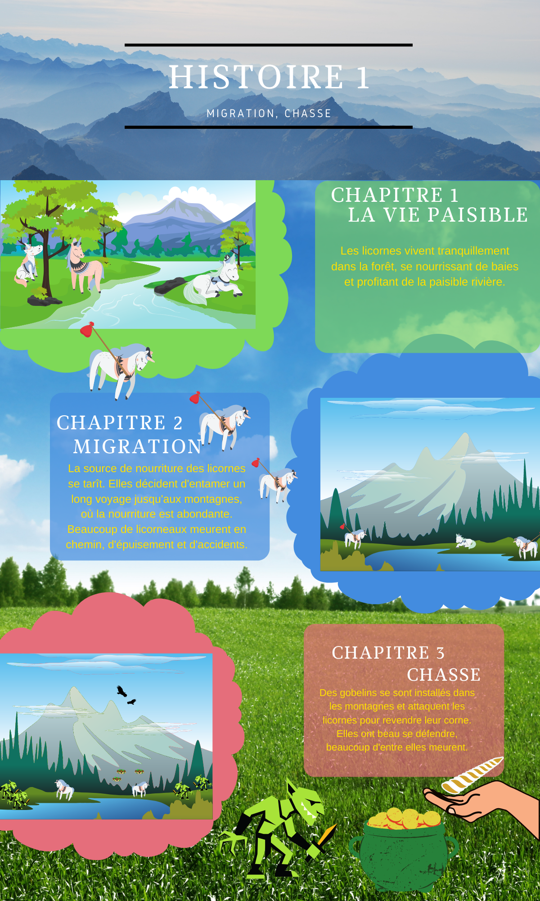

Histoire 1
Introduction
Histoire 1
Histoire 2
Faits réels associés
Histoire imaginaire

Voici quelques liens à suivre si vous désirez en apprendre plus sur ces espèces en danger. Par catégorie, ces espèces ont principalement été victimes...
...de la migration.
Le gnou
...de la chasse.
L'anguille européenne
le foudi de Maurice
le monarque de Fatu Hiva